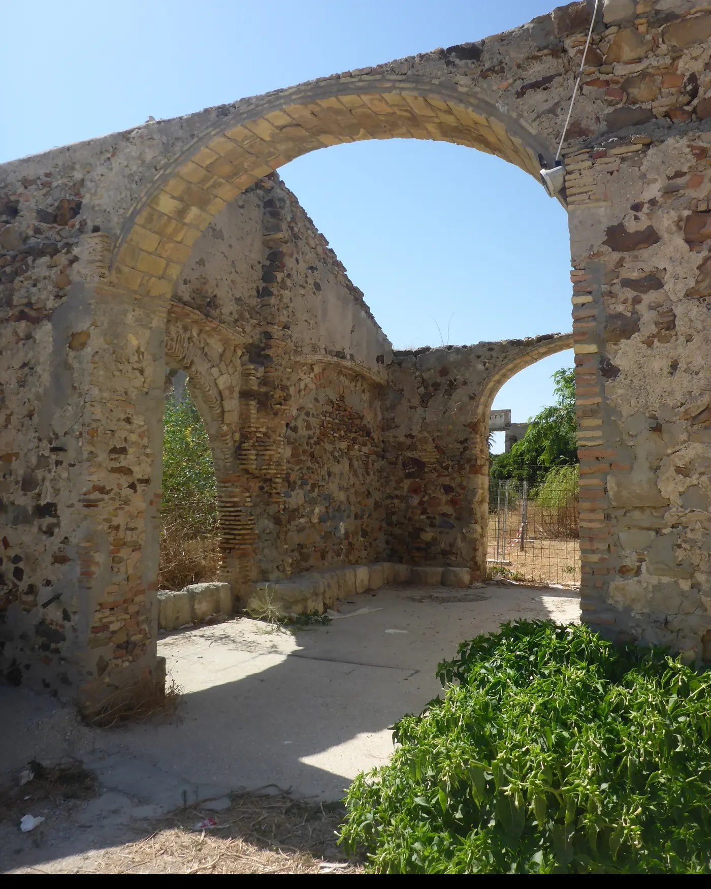

Sobre nosotros
Una familia de Zahara que lleva desde 1934 enlatando el atún de una sola almadraba, en la misma nave junto a la playa.

De la torre a la lata
La historia cabe en cinco fechas. Ninguna tiene premios; todas tienen atún.
- 1934
Antonio, atalayero de la torre de vigía, deja de subir cada mañana a mirar el agua. Con Carmen abre un almacén de salazón junto a la playa: mojama y huevas para vender en el pueblo.
- 1951
Llega la primera caldera de vapor y la primera remesa de latas. El atún se cuece en agua de mar y se tapa con aceite de oliva, como ahora.
- 1968
Se encarga la etiqueta litografiada: papel arena, tinta azul y la torre en el centro. Es la misma que lleva hoy cada lata, con las letras redibujadas.
- 1997
La nieta, que también se llama Carmen, decide que cada lata lleve una sola pieza con su nombre. Se acaba la lata de «atún» a secas.
- Hoy
Seguimos en la misma nave. Solo enlatamos el atún de mayo y junio de la almadraba de Zahara, y cuando se acaba una pieza, no hay más hasta el año siguiente.
Quién hace cada lata
En temporada la nave se llena; el resto del año quedamos los de siempre. Así se reparte el trabajo.
La mesa de limpieza
Rosario y Lola quitan a mano la piel, la sangre y cada espina de las piezas ya cocidas. Es el trabajo más lento de la casa y el que más se nota al abrir la lata.
La cocina
Manuel lleva las calderas: agua de mar, sal y el tiempo que pida cada pieza. La ventresca sale antes que el lomo.
El envasado
Pieza a pieza en la lata, el peso en la báscula y el aceite hasta arriba. Luego se cierra y se esteriliza.
La bodega y los pedidos
Carmen cuenta las latas que reposan, lee cada cupón y escribe a quien lo manda. También es quien dice que una pieza se ha acabado.
Lo que no cambia
Cinco decisiones que nos cuestan dinero y que no vamos a tocar.
Una temporada y ninguna más
No compramos atún congelado ni de otras épocas para tener latas todo el año. Si una pieza se agota en febrero, vuelve en abril.
Una pieza por lata
La tapa dice qué pieza lleva y lleva solo esa. No hay mezcla de recortes ni «atún en aceite» sin más.
Aceite de oliva virgen extra
De almazaras de Andalucía, y nada de girasol para abaratar. El aceite de la lata se puede usar después.
Once meses de reposo
Una lata recién hecha está buena; con un año en aceite está mejor. Por eso la de esta primavera no sale hasta la siguiente.
El precio a la vista
Todo lo que vendemos está en la tienda con su precio. Lo que cobramos de más por envío también.


Zahara de los Atunes
Un pueblo de la costa de Cádiz, entre Barbate y Tarifa, que vive de cara al Estrecho.
El Castillo de las Almadrabas se levantó a finales del siglo XV para guardar la pesca del atún y a quienes trabajaban en ella. Hoy quedan sus muros y sus arcos, a pocos pasos de la playa.
Desde la fábrica se ven las boyas de la almadraba en primavera. Cuando sopla levante fuerte no hay levantá, y la nave espera. Ese viento decide más días de trabajo que cualquier calendario.